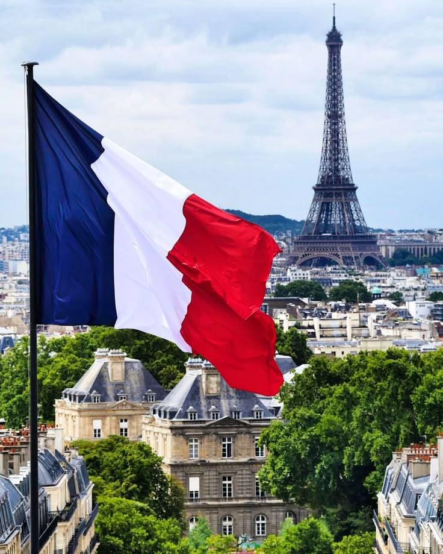

A Herança do Sabor e da Elegância
Fundado sobre as raízes de uma antiga adega do século XVIII, o Le Chêne d'Or nasceu do sonho de honrar o legado de uma família. Nosso nome, "O Carvalho de Ouro", simboliza a força de nossa tradição e a preciosidade de cada ingrediente. Convidamos você a uma experiência imersiva, onde luxo, história e sabor se encontram para criar memórias inesquecíveis.
Nossa Filosofia
- Tradição e Inovação: Respeitamos as receitas clássicas enquanto exploramos novas texturas e sabores.
- Ingredientes Excepcionais: Selecionamos apenas os melhores produtos sazonais de produtores artesanais.
- Hospitalidade: Cada cliente é recebido como um convidado de honra em nossa casa.